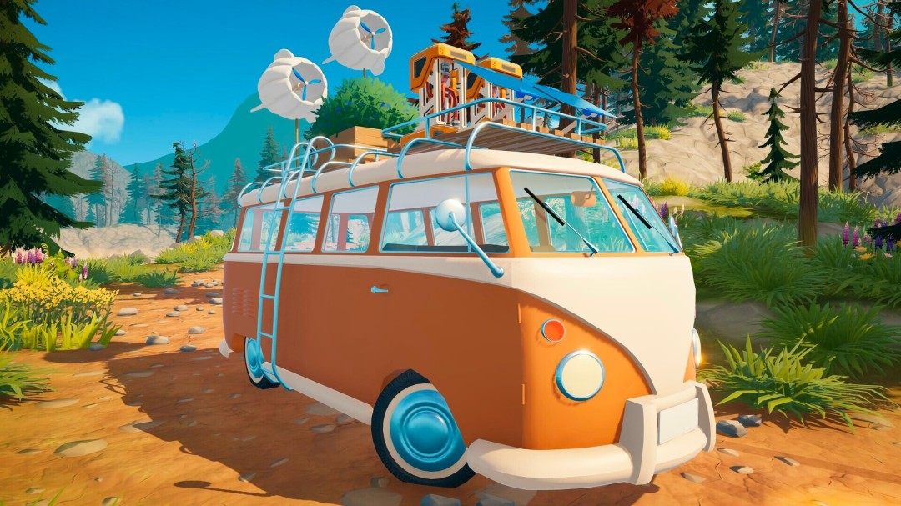
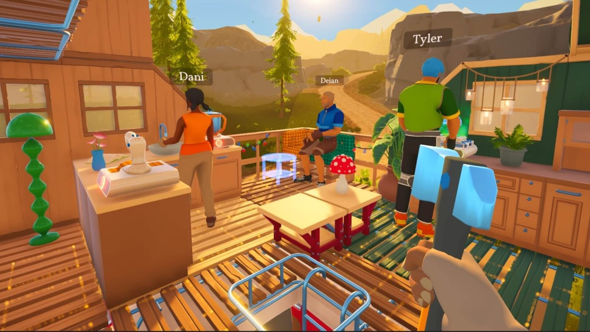
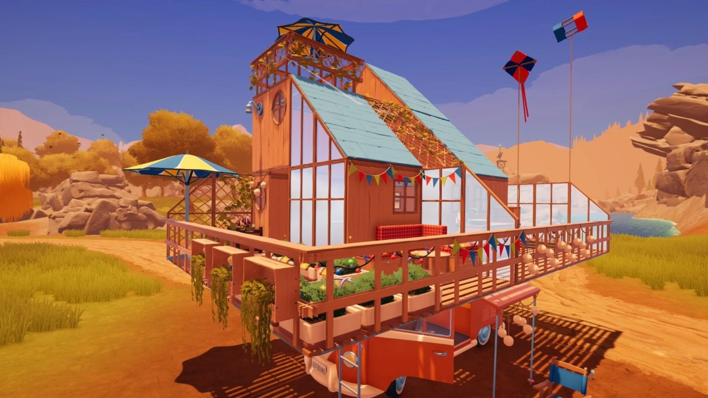
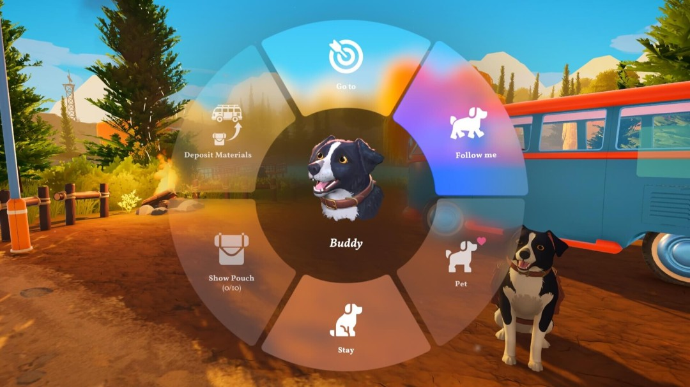
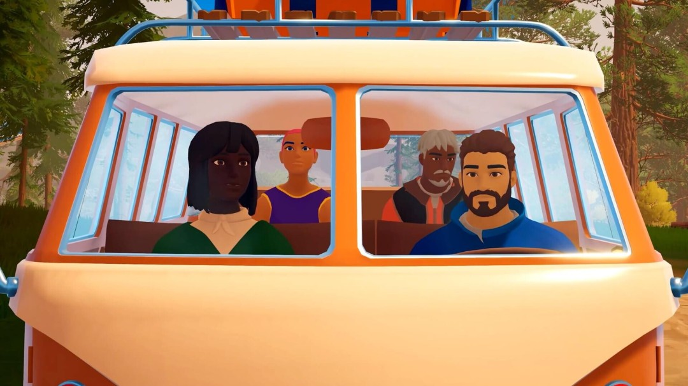
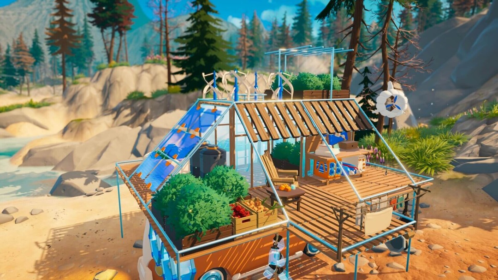

What is Outbound?Outbound 是什么游戏？
Outbound is a cozy open-world exploration and survival-crafting game set in a utopian near future. You start with an empty electric camper van and gradually turn it into a mobile home.《Outbound》是一款近未来乌托邦背景的舒适开放世界探索与生存建造游戏。玩家从一辆空荡荡的电动房车开始，逐步把它改造成移动之家。
The official Steam description highlights five pillars: explore colorful biomes, build and craft modular parts, grow plants and mushrooms, adopt and train a pet, and play solo or online co-op with up to 4 players.Steam 官方介绍的核心卖点包括：探索多样生态群系、用模块化部件建造房车、种植植物与蘑菇、领养训练宠物，以及单人或最多 4 人在线合作。
This site focuses on launch-day answers: what to build first, how power works, what resources matter, and how to avoid wasting early materials.本站重点解决首发当天玩家最需要的答案：先造什么、能源怎么供、哪些资源优先、如何避免前期材料浪费。

Screenshots and Video实机画面与视频
View on Steam查看 Steam 页面





Outbound launched on May 11, 2026. 1,006 reviews, 72% positive. Latest update: Fishing patch 1.0.6Outbound 于 2026年5月11日发售。1006条评价，72%好评。最新更新：钓鱼补丁 1.0.6
First Hour Starter Plan首小时开荒路线
0-10 min: check power and storage0-10 分钟：确认电力和储物
Before expanding, understand where energy is generated, where it is consumed, and how much storage space your starter van has.扩建之前，先确认电力从哪里来、哪些设备会耗电、初始房车能放多少材料。
10-25 min: gather basic materials10-25 分钟：采集基础材料
Prioritize wood-like, metal-like and plant resources. Keep rare components until you know the recipe path.优先拿木材类、金属类、植物类资源。稀有零件先别乱用，等确认合成路线再消耗。
25-40 min: build a work loop25-40 分钟：建立工作循环
Aim for a simple loop: gather resources, process materials, craft a useful module, then upgrade the van layout.目标是形成循环：采集资源、加工材料、制作有用模块、再升级房车布局。
40-60 min: choose your direction40-60 分钟：确定发展方向
Pick one route first: power stability, storage expansion, farming/cooking, or exploration mobility.先选一条路线：电力稳定、储物扩容、种植烹饪，或探索机动性。
Core Systems Explained核心玩法系统
Energy: sun, wind and water能源：太阳能、风能、水能
Outbound revolves around sustainable power. Energy determines how many stations, modules and comfort upgrades your van can support. Expect early guides to focus on stable production before decoration.Outbound 的核心是可持续供电。电力决定你能运行多少工作站、模块和舒适性升级。早期攻略会优先关注稳定发电，而不是装饰。
Modular van building模块化房车建造
The vehicle is your base. Space planning matters: storage, crafting stations, sleeping/comfort zones and external modules compete for limited room.房车就是你的基地。空间规划很重要：储物、工作台、休息舒适区、外部模块都会抢有限空间。
Growing and cooking种植与烹饪
Official copy confirms gardens, plants, mushrooms and cooking. Food systems are likely tied to health, travel efficiency or long-term self-sufficiency.官方确认有花园、植物、蘑菇和烹饪。食物系统大概率与健康、旅行效率或长期自给自足有关。
Pets and training宠物与训练
Players can adopt a friend at the Paws & Whiskers Lodge, then feed, pet and train it. Launch-day testing should identify what pets can help with.玩家可以在 Paws & Whiskers Lodge 领养伙伴，并喂养、抚摸、训练它。首发后需要验证宠物具体能帮哪些忙。
Crafting Roadmap合成路线图
Full recipes will be updated after hands-on verification. Below is the launch-day tracking table for the most important early-game items.完整配方会在实测后更新。下面是首发当天最需要优先验证的前期物品追踪表。
| Item | Priority | Why it matters作用 | Status |
|---|---|---|---|
| Solar / Wind Power Module | High | Stabilizes crafting and automation.稳定工作台和自动化供电。 | Pending verification |
| Storage Upgrade | High | Reduces early material loss and travel interruptions.减少前期材料丢失和频繁往返。 | Pending verification |
| Basic Workstation | High | Unlocks processing and modular upgrades.解锁加工和模块升级。 | Pending verification |
| Garden / Planter | Medium | Supports self-sufficient food production.支持食物自给。 | Pending verification |
Co-op Multiplayer Guide多人联机攻略
Driver驾驶位
Handles route choice and biome scouting.负责路线选择和生态群系探索。
Builder建造位
Manages van layout, workstations and modules.管理房车布局、工作台和模块。
Gatherer采集位
Collects resources and marks useful locations.收集资源并标记有用地点。
Official PC Requirements官方 PC 配置要求
Minimum
- OS: Windows 10 64-bit
- CPU: Intel Core i3-10100F / Ryzen 3 3100
- RAM: 4 GB
- GPU: NVIDIA GTX 1050 / AMD RX 570
- DirectX: 11
- Storage: 16 GB
Recommended
- OS: Windows 11 64-bit
- CPU: Intel i3-12100F / Ryzen 7 1700 or better
- RAM: 8 GB
- GPU: NVIDIA RTX 3060 / AMD RX 7600XT or better
- DirectX: 12
- Storage: 16 GB
FAQ
Does Outbound support Chinese?Outbound 支持中文吗？
Yes. Steam lists Simplified Chinese and Traditional Chinese among supported languages.支持。Steam 页面列出了简体中文和繁体中文。
Can I play solo?可以单人玩吗？
Yes. Official text says the game can be played alone or together with friends.可以。官方说明支持单人游玩，也支持和朋友一起玩。
How many players are supported online?最多几个人联机？
Official Steam text says online co-op supports up to 4 players.Steam 官方说明支持最多 4 人在线合作。